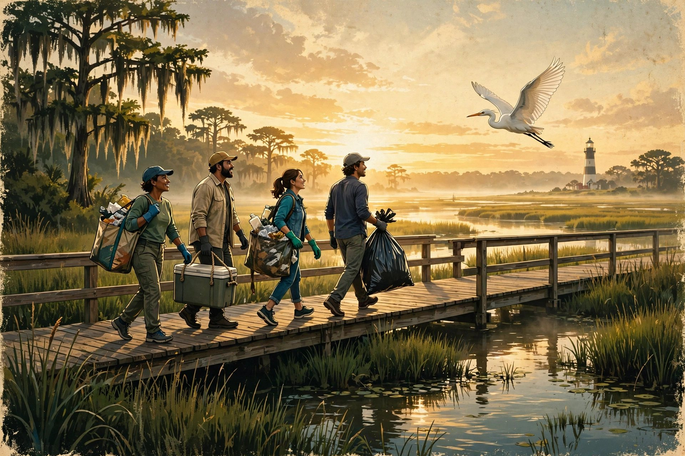
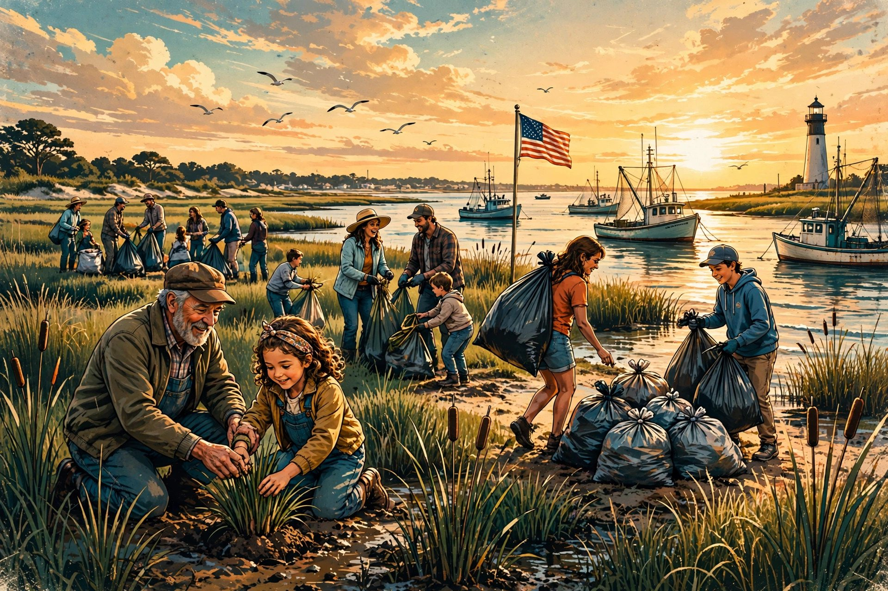

Tu primer paso por la costa
Encuentra cómo empezar: voluntariado, ideas para tu clase, materiales útiles o tus habilidades.
Leer la guía →
Costa Fuerte
Esta es nuestra comunidad. Este es nuestro orgullo. Esta es nuestra costa.
Vecinos que protegen nuestras aguas, nuestros mariscos y la costa que heredarán nuestros hijos. Toda la gloria para Dios y todo el mérito para la comunidad.
Costa Fuerte en directo
Cada visita es otra oportunidad de cuidar a la Madre Tierra.
Conectando con la actividad en directo…
El recuento comienza con la primera vista registrada.
Los números reflejan cargas de página registradas, no personas individuales. Recargar o cambiar de idioma añade una vista; las pestañas separadas pueden contar como sesiones distintas. El tráfico automatizado y el bloqueo del seguimiento pueden afectar al recuento. Se actualiza cada 30 segundos mientras esta página está visible.
Empieza aquí
Muchas manos. Una sola costa. Más fuertes juntos.
Costa Fuerte


Cómo empezó todo · 15 de octubre de 2026
El 15 de octubre de 2026 se encontraron un televisor abandonado y plástico grueso en la marisma de Bayou Bernard Park (James Hill Park), 1890 Switzer Rd, Gulfport : en aguas que desembocan en Mississippi Sound, las mismas junto a las que crecerán nuestros hijos.
Nadie miró hacia otro lado. Se fotografió, se denunció, se retiró y se anotó qué se encontró, dónde y cuándo. Esa entrada se convirtió en la Constancia #001, y así nació Costa Fuerte: una vigilancia vecinal para los bayous, para que los vertidos de basura se detecten, se documenten y se atiendan, en vez de permanecer meses en la marisma.
«Este es nuestro hogar. El planeta no se deteriora por accidente: se deteriora por el abandono, y el abandono es una elección. Nosotros elegimos otro camino. La Madre Tierra no tiene quien defienda sus intereses ante el gobierno. Nos tiene a nosotros».


Vigilancia del Bayou · Denunciar vertidos de basura
Primero, una foto desde una distancia segura. Después, la alerta, para que los vecinos se enteren de inmediato. Luego, la llamada oficial. Un avistamiento, dos destinatarios: los vecinos y el canal oficial.
🚨 ALERTA DE VERTIDO DE BASURA / DESECHOS — COSTA FUERTE QUÉ: [qué se vio: vertido en curso / desechos recientes, de qué tipo] DÓNDE: [ubicación en el mapa o calle / punto de referencia más cercano] CUÁNDO: [fecha + hora del avistamiento] FOTO: [adjunta] ESTADO: [denunciado ante ORGANISMO por CANAL a las HORA: completar una vez presentada la denuncia]
Publica la alerta completa donde tus vecinos realmente lean los mensajes: chat grupal, grupo de Facebook o Nextdoor. Guarda una copia con la plantilla de registro que aparece más abajo. Esta página no recibe ni publica denuncias de incidentes. Envía los datos que permitan identificar a las personas por los canales oficiales de denuncia.
La seguridad no se negocia: Limítate a observar y denunciar. Nunca te enfrentes a quien esté arrojando basura. No bloquees vehículos, no discutas ni sigas a nadie. Toma la foto desde una distancia segura y deja que la denuncia haga su trabajo. Si alguien está en peligro, llama al 911 en vez de recurrir a la cadena de alertas.
Cualquier aviso municipal que no sea una emergencia, incluidos los vertidos de basura. Número alternativo: 228-868-5700 · [email protected]. Observa desde un lugar seguro y envía los datos pertinentes directamente al organismo oficial.
La limpieza de los lugares de vertido dentro de los límites de la ciudad corresponde a Cumplimiento del Código Municipal y Obras Públicas.
Descargas ilícitas en desagües pluviales y cursos de agua. [email protected]
El punto de contacto federal para derrames y amenazas repentinas: lo atiende la Guardia Costera de Estados Unidos y transmite los avisos al coordinador de la EPA / Guardia Costera en el lugar de los hechos.
Organismo estatal responsable de la calidad del agua y los vertidos ilegales. Emergencias: MEMA, disponible 24/7 en el 1-800-222-6362 avisa al equipo de respuesta del MDEQ.
Recursos costeros y marinos, Biloxi. [email protected] · Coorganizador de Mississippi Coastal Cleanup.
Formulario federal de denuncia de infracciones. Atención al público de la Región 4 de la EPA: 800-241-1754.
Desechos en aguas navegables y relleno de humedales sin autorización: ámbito de la sección §404 de la Ley de Agua Limpia.
Fuente: guía del MDEQ sobre vertidos ilegales, consultada el 25 de octubre de 2026. No te enfrentes a las personas, no las sigas ni las identifiques públicamente.
Registro comunitario · Documentemos bien, entre todos
Una denuncia por escrito es fácil de seguir y permite que el siguiente vecino continúe el trabajo. Copia el formato, inicia la entrada el día que presentes la denuncia y guárdala donde el equipo pueda verla. Esta página no presenta ni almacena tu denuncia : el registro es tuyo para conservarlo y compartirlo.
COSTA FUERTE — ENTRADA DEL REGISTRO COMUNITARIO FECHA/HORA: [cuándo se presentó la denuncia] ORGANISMO: [a quién se envió] CANAL: [teléfono / correo electrónico / formulario en línea] HECHOS DENUNCIADOS: [qué se denunció: vertido de basura, desechos, punto de origen] RECIBIDA POR: [nombre, número de trámite/caso o "pendiente de confirmación"] RESPUESTA: [qué dijo o hizo el organismo: actualizar al recibir respuestas] SEGUIMIENTO ENVIADO: [fecha + canal, o "aún no se ha enviado"]
La primera entrada ya está escrita: el hallazgo de Bayou Bernard Park, fotografiado y denunciado el 15 de octubre, la Constancia #001. Cada llamada y correo posterior se anota en esa misma entrada.
El personal de estos organismos atiende muchas llamadas. Si pasa una semana sin noticias, da el siguiente paso, agradeciendo la ayuda recibida hasta ese momento, y anótalo en la misma entrada.
Envía un correo al mismo contacto del organismo, con la fecha original y el número de trámite, y solicita por escrito el estado de la denuncia.
Solicita al organismo los documentos relacionados con el lugar denunciado, para que el equipo pueda ver qué se ha hecho y dónde aún hace falta ayuda.
Concejo municipal, supervisor del condado, representantes estatales: comparte las entradas del registro para que conozcan la necesidad y puedan brindar su apoyo.
El registro, las fotos y los vecinos colaborando: una limpieza comunitaria bien documentada es una historia que merece compartirse.

La red que nos conecta · Directorio de contactos
Costa Fuerte se une a los equipos, programas y organizaciones que ya cuidan estas aguas, desde el servicio 311 de Gulfport hasta el Ocean Trash Index mundial. Agradecemos a cada uno. Filtra por ámbito, abre una ficha y consulta el primer paso recomendado. Cuando se propone una carta, se trata de un borrador: nada se envía sin que una persona revise el texto exacto.
Sin casillas marcadas se muestran todas las organizaciones. Marca un ámbito para acotar la lista.
Un programa permanente de MSU Extension y Mississippi Marine Debris Task Force, que forma parte de International Coastal Cleanup de Ocean Conservancy. Cada elemento registrado se incorpora a datos mundiales. Sus nueve lugares de 2026 son playas o zonas portuarias. Organiza sus propios eventos y horarios; Costa Fuerte no convoca actividades en sus lugares.
Primer paso recomendado: Si participas en el programa oficial, inscríbete y consulta los detalles de tu lugar directamente en su página del evento. Esta página no te inscribe ni te convoca a ninguno de esos lugares.
Atendido por la Guardia Costera de EE. UU. las 24 horas: el punto de contacto federal para derrames y amenazas repentinas al agua. El aviso se remite al coordinador designado para el lugar: la EPA en zonas interiores y la Guardia Costera en la zona costera. Así se coordina la ayuda para un incidente importante.
Primer paso recomendado: Úsalo si hay un vertido activo, una película aceitosa, olor químico o peligro inmediato. Anota la llamada en el registro comunitario.
La agencia ambiental federal para Mississippi: contaminación del agua, vertidos ilegales y protección de humedales conforme a la sección 404 de la Ley de Agua Limpia.
Primer paso recomendado: Presenta el formulario de infracción junto con tu aviso municipal y anótalo en el registro comunitario para que el equipo pueda seguir el caso.
El programa federal de seguimiento de residuos marinos. La aplicación Marine Debris Tracker registra residuos con GPS y fotos directamente en el conjunto de datos nacional de NOAA: el equivalente federal del Ocean Trash Index mundial.
Primer paso recomendado: Registra el hallazgo de Bayou Bernard en la aplicación, con fotos y GPS, para que figure en los datos federales y no solo en nuestro registro.
Conviene decirlo claramente: FEMA no limpia los bayous. Sus fondos se movilizan tras una declaración presidencial de desastre solicitada por el gobernador, además de las subvenciones de mitigación que solicitan las administraciones. Los vertidos habituales no son su misión: la cadena de contaminación pasa del NRC al coordinador de la EPA o la Guardia Costera y a MEMA. Si una tormenta esparce escombros por toda la costa, FEMA interviene a través de MEMA.
Primer paso recomendado: Para un vertedero no corresponde acudir a FEMA: presenta el aviso al NRC, la EPA o MDEQ. Conserva esta ficha para dirigir cada aviso a quien pueda actuar.
El organismo estatal encargado de la calidad del agua, el control de la contaminación y los vertidos ilegales en aguas del estado. Su seguimiento público se centra en las bacterias de las playas; por eso resulta tan útil que los vecinos registren lo que observan en los bayous.
Primer paso recomendado: Llama para comunicar el aviso, pide un nombre o número de expediente y anótalo ese mismo día.
El socio estatal para el Mississippi Sound y los bayous, con sede en Biloxi, y coorganizador de Mississippi Coastal Cleanup junto con Marine Debris Task Force. Su Seafood Technology Bureau se ocupa del análisis del agua: lo que vive en ella acaba formando parte de los productos del mar de Mississippi.
Primer paso recomendado: Comunica los residuos y pide a DMR que registre el lugar del bayou para que quede constancia. Carta de contacto redactada; no enviada
Coordina la respuesta estatal, dirige el Centro Estatal de Operaciones de Emergencia y conecta a los organismos de emergencia de los condados con la ayuda estatal y federal. MEMA coordina; no se encarga de aplicar la normativa ambiental. Su línea de 24 horas permite contactar con el equipo de emergencia de MDEQ.
Primer paso recomendado: Solo para un incidente de la magnitud de una emergencia con materiales peligrosos. En los demás casos, llama primero a MDEQ y al 311.
La primera llamada para un vertedero concreto dentro de los límites de la ciudad. La propia orientación municipal indica comunicar a los responsables de vertidos mediante el 311 y fotografiar el vehículo y la matrícula.
Primer paso recomendado: Presenta el aviso al 311 el mismo día que observes el problema. Los avisos municipales, del condado, estatales y federales se tramitan en paralelo y se registran todos. Carta de apoyo municipal redactada; no enviada
Para quejas sobre basura y residuos en zonas no incorporadas del condado: es la vía del condado cuando el vertedero queda fuera de los límites municipales.
Primer paso recomendado: Usa la vía de quejas del condado para sus zonas; el formulario de zonificación incluye una categoría específica de basura y residuos.
Mississippi Coastal Cleanup forma parte de International Coastal Cleanup, que funciona desde 1986. Los datos registrados con la aplicación Clean Swell se cargan de inmediato en Ocean Trash Index, la mayor base de datos mundial de residuos marinos.
Primer paso recomendado: Comparte el hallazgo documentado de Bayou Bernard con el equipo de limpieza para que sus residuos se cuenten junto con los de las playas. Borrador redactado; no enviado
Se ha dado a conocer por detener el plástico en los ríos antes de que llegue al océano. Bayou Bernard desemboca en Mississippi Sound: el problema sigue activo en los bayous de Estados Unidos, y aquí una comunidad trabaja para frenarlo con sus propias manos.
Primer paso recomendado: Usa la versión internacional de la carta principal de contacto y adjunta el hallazgo documentado de Bayou Bernard. Borrador redactado; no enviado
Una red de agrupaciones comunitarias creada precisamente para esto: aguas locales, vecinos, análisis de agua limpia y defensa de su protección.
Primer paso recomendado: Pregunta si existe una agrupación de la costa del Golfo de Mississippi o un contacto regional y cómo puede un equipo de Gulfport integrarse en su red. Borrador redactado; no enviado
Organiza Great Global Cleanup. Una limpieza local documentada, con fotos y cantidades pesadas, aporta la información concreta con la que trabaja su red.
Primer paso recomendado: Comparte la vigilancia permanente de Bayou Bernard con la red de Great Global Cleanup, junto con el hallazgo documentado y los avisos que se vayan registrando. Borrador redactado; no enviado
Una empresa de limpieza con una amplia audiencia pública; la vía de entrada son sus alianzas. La petición es dar difusión al trabajo, no solicitar dinero.
Primer paso recomendado: Escribe al correo de alianzas: un equipo activo de Gulfport con cifras reales que solicita difusión. Borrador redactado; no enviado
Una alianza mundial de más de 1.300 organizaciones. Los grupos pueden solicitar su incorporación, lo que permite incluir a Gulfport en una red internacional.
Primer paso recomendado: Presenta la solicitud a la coalición y una nota breve al correo de prensa con la declaración pública adjunta. Borrador redactado; no enviado
La campaña mundial de las Naciones Unidas contra el plástico. La cuenca del río Mississippi también se ha unido a Clean Seas, de modo que la costa del Golfo ya forma parte de esta labor. Una aclaración: Clean Seas recibe compromisos de administraciones, empresas y organizaciones; no dispone de un buzón ciudadano para avisos.
Primer paso recomendado: Muestra apoyo públicamente: comparte los hechos de Gulfport con #CleanSeas y permite que las organizaciones anteriores los lleven a sus redes.
La coalición del Golfo por el agua limpia, con sede en Nueva Orleans y una larga trayectoria de organización en Mississippi. El agua limpia y las marismas sanas son su ámbito de trabajo, y agradecemos su presencia en estas aguas.
Primer paso recomendado: Llama en lugar de enviar un correo. Explica lo ocurrido en Bayou Bernard, pregunta por su contacto actual en Mississippi, ofrece el registro comunitario que se está construyendo y consulta cómo puede Costa Fuerte apoyar su trabajo. Borrador redactado; no enviado
Dispone de un canal público para comunicar incidentes, con carga de fotos, pensado para ciudadanos que encuentran contaminación. Su zona de vigilancia es el bajo río Mississippi en Luisiana. Bayou Bernard queda fuera de ella, pero es el Waterkeeper más cercano y puede orientar hacia el contacto adecuado.
Primer paso recomendado: Comunica el hallazgo de Bayou Bernard mediante el formulario de incidentes con fotos y pregunta qué Waterkeeper cubre Mississippi Sound. Borrador redactado; no enviado
Protege las marismas costeras de Mississippi, incluido el sistema de Pascagoula, y dispone de una oficina costera en Ocean Springs, a un condado de distancia del bayou.
Primer paso recomendado: Envía una carta breve a la delegación de Mississippi: vecinos que limpian la marisma y piden ponerse en contacto con su equipo costero. Borrador redactado; no enviado
La costa de Mississippi es una zona de cría de aves. Los residuos en la marisma dañan su hábitat, y el personal de Audubon Delta ya trabaja en lugares de la zona de Gulfport.
Primer paso recomendado: Dirige una página a la persona responsable de políticas con el hallazgo y una pregunta: ¿qué integrante del equipo costero debería recibir las novedades de Vigilancia del Bayou? Borrador redactado; no enviado
La presencia comunitaria organizada que ya trabaja en nuestra cuenca: vecinos de Turkey Creek que protegen los recursos naturales y culturales de su arroyo con ayuda de Land Trust, que también conserva Turkey Creek Greenway. Bernard Bayou aún no tiene un grupo dedicado de amigos del bayou. Costa Fuerte puede crecer en ese papel, junto a quienes llevan más tiempo cuidándolo.
Primer paso recomendado: Presenta Costa Fuerte como un vecino y ofrece ayuda para vigilar el agua. Pregunta a quienes conocen la cuenca qué les habría gustado saber cuando empezaron.
La redacción de nuestra costa. Una limpieza ciudadana documentada, con vecinos que ayudan, fotos y resultados que compartir, es una historia que merece contarse.
Primer paso recomendado: Llama a la redacción con la documentación del hallazgo a mano.
La información de AP en Jackson llega a periódicos de todo Mississippi. El aviso para los medios está redactado y listo para copiar: quién, qué, cuándo, por qué importa y disponibilidad de fotos del hallazgo documentado.
Primer paso recomendado: Comparte el hallazgo documentado y los avisos de Vigilancia del Bayou conforme se registren. Borrador redactado; no enviado
En toda la costa · Tres grupos de vigilancia, una costa
La vigilancia está presente en tres lugares, de oeste a este por la costa del golfo de Mississippi. La misma rutina en cada puesto: observar, fotografiar desde una distancia segura, denunciar y registrar. Un puesto de vigilancia no indica un incidente: significa que alguien está atento.
Bayou Bernard · Condado de Harrison
Donde comenzó Costa Fuerte. Bayou Bernard y sus arroyos, Turkey Creek y Flat Branch, vigilados por los vecinos que viven a sus orillas. El hallazgo del 15 de octubre en Bayou Bernard Park es la Constancia #001.
Tchoutacabouffa River · Back Bay of Biloxi
El río de Biloxi, que serpentea por la ciudad hasta Back Bay: las aguas de trabajo que sostienen a la flota pesquera de Biloxi. Un puesto de vigilancia permanente: todavía no se ha denunciado nada aquí, y para eso existe la vigilancia.
Pascagoula River · Condado de Jackson
Uno de los últimos grandes ríos de Estados Unidos que fluyen libremente, atravesando el condado de Jackson hasta Mississippi Sound. La misma vigilancia en el extremo oriental de la costa: primero la foto, después la denuncia y el registro.
Información sobre las aguas locales
Un solo sistema conectado: bayou, arroyos, lago y canal navegable que desembocan en Mississippi Sound. Si vives cerca de Lemoyne Blvd, Dedeaux Rd, Canal Rd u Orange Grove, estas aguas también son tuyas.
El cauce principal, monitoreado desde Highway 49 hasta Industrial Seaway, con estaciones del MDEQ en Orange Grove y junto a Canal Rd. El televisor y el plástico del 15 de octubre se encontraron en su marisma, en Bayou Bernard Park.
Recorre unas 12.9 millas y se une a Bernard Bayou justo al norte del aeropuerto. Fue nombrado uno de los 10 ríos más amenazados de Estados Unidos en 2021. Su comunidad histórica lleva años defendiendo esta cuenca.
El pequeño afluente con una estación de monitoreo del MDEQ en el cruce de Dedeaux Road: el arroyo con nombre y monitoreo más cercano al vecindario de Lemoyne Blvd.
Donde el sistema se encuentra con Mississippi Sound. En jornadas anteriores, los equipos de Renew Our Rivers retiraron 4.5 toneladas en Gulfport Lake / Industrial Seaway y 5.25 toneladas en Seaway y Bayou Bernard.
La siguiente cuenca hacia el noreste, cerca de Lyman: parte de la misma llanura costera, vigilada por los mismos vecinos.
El monitoreo estatal incluye avisos sobre bacterias en las playas (envía «MDEQbeach» por mensaje de texto al 95577). Los recuentos de limpieza llegan después de los hechos. Los vecinos que viven a orillas de los bayous son quienes aportan ojos adicionales para cuidarlos.
Las familias de esta costa viven junto a estas aguas y de ellas: criamos a nuestros hijos aquí, los llevamos a los ríos, pescamos, nadamos y crecemos en ellas. Por eso duelen tanto los neumáticos arrojados a esos ríos. Estas aguas no son de alguien más. Son nuestras.
Los cangrejos, los camarones, las ostras y las personas que se ganan la vida trabajando en estas aguas. Lo que se arroja a la marisma termina en las mismas aguas de donde salen nuestros productos del mar. Proteger el bayou es proteger la mesa, la industria y el buen nombre de la costa.
Fotos del lugar de vertido ANTES, desde una distancia segura · Fotos DESPUÉS desde los mismos ángulos, una vez retirados los desechos · Anota la fecha, el lugar, lo encontrado y a quién se denunció · Archiva el registro y las fotos ese mismo día · Comparte públicamente los resultados documentados: la gente confía en lo que puede ver.
Tu costa. Tu aporte.
¿Te importan estas aguas? Empieza por una cosa que puedas hacer. Elige cómo participar y envía al equipo un correo breve sobre cómo te gustaría ayudar.
Abre un borrador en tu aplicación de correo. Revísalo y envíalo al equipo; no se envía nada automáticamente.
Ayuda en una limpieza supervisada, en la documentación, con suministros o con la difusión. Cuéntanos en qué ciudad estás y qué tipo de ayuda puedes ofrecer.
VoluntariadoLos estudiantes pueden ayudar a registrar datos de limpieza, crear volantes aprobados o participar en actividades supervisadas. ¿Eres menor de 18 años? Pide a tu madre, padre, tutor o docente que coordine con nosotros.
EstudianteDocentes, familias y grupos: consulten sobre una actividad acorde con sus edades, intereses y la supervisión adulta disponible.
Docente o grupoEstos enlaces abren tu aplicación de correo. Revisa y envía el mensaje desde allí; esta página no envía ni almacena tus datos. También puedes escribir directamente a [email protected]. No envíes datos privados de menores ni información médica.
Propón una idea a tu madre, padre, docente o a un amigo: aprender sobre el bayou, diseñar un volante y pedir permiso antes de publicarlo, o pedir a un adulto que coordine una limpieza. Los adultos pueden usar la solicitud de contenedores de suministros de Mississippi Coastal Cleanup; la disponibilidad y la aprobación dependen de ese programa.
Por el momento no hay ninguna limpieza de Costa Fuerte confirmada. Sumarte a la conversación expresa tu interés; no es una inscripción a un evento. Antes de invitar a alguien a asistir, las actividades confirmadas incluirán fecha, hora, lugar, contacto de un adulto y un plan ante las condiciones meteorológicas.
Niños de la costa · Aprende con una persona adulta
Prueben juntos un pequeño reto para cuidar la costa. Las actividades de limpieza reales requieren una persona adulta, terreno seguro y los suministros adecuados.
¿Qué harías?
Una envoltura de dulce en un sendero seco
Elige una respuesta para ver por qué ayuda.
Esta actividad funciona en esta página. No recopila cuentas, nombres, fotos ni puntuaciones. Puedes imprimir esta sección con la opción Imprimir de tu navegador.
Pregunta a tu docente, madre o padre: «¿Qué haría que nuestra costa estuviera más sana y qué podemos hacer juntos sin correr riesgos?»
De las ideas a la acción
Guías prácticas para vecinos, estudiantes, docentes y familias que quieren dar juntos un paso útil.
Encuentra cómo empezar: voluntariado, ideas para tu clase, materiales útiles o tus habilidades.
Leer la guía →Anota qué viste, dónde y cuándo, toma fotos sin riesgo y usa los canales oficiales para dar aviso.
Leer la guía →Preguntas frecuentes
Por el momento no hay una fecha de limpieza de Costa Fuerte confirmada. Antes de invitar a alguien a asistir, las actividades confirmadas incluirán fecha, hora, lugar, contacto de una persona adulta y un plan ante las condiciones meteorológicas.
Sí, pueden aportar sus ideas. Una madre, un padre, un tutor o un docente debe coordinar la participación con nosotros y organizar la supervisión adulta adecuada.
No. Los enlaces abren un borrador en tu propia aplicación de correo. Revísalo y envíalo allí. Un correo expresa interés; este sitio no te inscribe en un evento ni almacena registros de inscripción.
Este sitio no recibe ni envía denuncias de incidentes. Usa los canales oficiales y envía los datos que identifiquen a personas directamente al organismo responsable. Observa desde un lugar seguro y nunca te enfrentes a nadie.
Ponemos cuidado en este sitio, y tu punto de vista ayuda a nuestro equipo a hacerlo más sólido. Comparte una sugerencia constructiva, otra perspectiva o algo que podríamos hacer mejor.
Revisa y envía el mensaje desde tu aplicación de correo.
Nuestros patrocinadores
El programa de patrocinadores de Costa Fuerte es la forma en que los negocios locales respaldan el agua limpia y comunidades más fuertes. Estos son los negocios que están con nosotros: apóyelos usted también.

Costa Fuerte
No te lleves nada. No dejes nada.Disfruta hoy. Respeta mañana.
Buena gente. Buenos lugares. Buenos hábitos.
Moore Electric
Servicios eléctricos para hogares y negocios en toda la costa del golfo de Mississippi.
Kingdom Connections Consulting, LLC
“Claridad para tu próximo paso empresarial.”
Consultoría de préstamos para pequeñas empresas: orientación de financiamiento que ayuda a los negocios nuevos a empezar, crecer y pedir préstamos con un plan.
¿Quiere que su negocio esté aquí? Conviértase en patrocinador